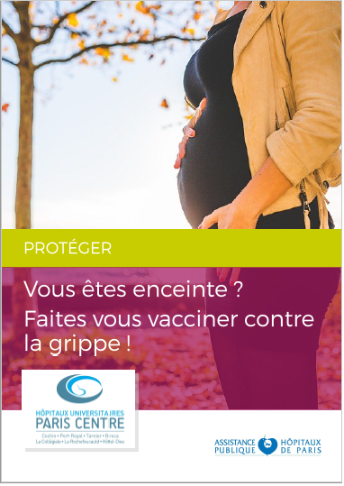

|
Pourquoi se préparer ?
La préparation à la naissance est un temps d’information et d’apprentissage corporel, spécifique à vos demandes et adaptée à la maternité de votre choix. C’est un lieu de rencontre avec des femmes enceintes, des futurs pères, mais aussi avec notre équipe.
La préparation à la naissance est à faire au troisième trimestre de la grossesse, idéalement au 7ème et 8ème mois de la grossesse environ.
Elle se déroule en salle de préparation au rez-de-jardin de la maternité.
Il faut prévoir une tenue souple, une grande serviette de bain et des chaussettes, sans oublier votre IPP (le numéro qui vous a été attribué lors de votre inscription à la maternité).
La sécurité sociale prend en charge 8 heures de cours de préparation à l'accouchement. Les cours effectués en plus ne sont pas remboursés.
Il est recommandé de s'inscrire, pour les cours à Port-Royal comme en ville, dès le 4ème mois de votre grossesse.
POUR TOUS LES COURS, MERCI DE VOUS MUNIR DE VOTRE NUMERO DE DOSSIER IPP/NIP.
VOUS TROUVEREZ REPONSES A VOS QUESTIONS dans l'item Questions Fréquentes.
COURS DE PPO
| |
LUNDI
|
MARDI
|
MERCREDI
|
JEUDI
|
VENDREDI
|
|
09h15
|
|
|
|
09h15-10h30
SF Gam
grossesse, accouchement et parentalité en toute sérénité avec la sophrologie
|
|
|
09h30
|
09h30-10h45
SF Guelain
« De Gasquet 1er bébé »
|
|
09h30 - 10h45
SF Carpène Retailleau
Chant prénatal
|
|
|
10h00
|
|
10h00 - 12h00
GROUPE DE PAROLE
Réanimation Néonatale
Pédiatres
|
|
10h30
|
10h30-11h45
SF Meunier
Sophrologie
|
10h30-11h45
SF Gam
grossesse, accouchement et parentalité en toute sérénité avec la sophrologie
|
|
10h45
|
10h45-12h00 (1 cours)
SF Guelain
« De Gasquet 2ème bébé et plus »
|
|
|
11h45
|
|
|
|
|
12h15
|
12h15 - 13h30
(1 cours)
SF Delzant
ou Bortolotti
PPO classique
|
12h15-13h30
SF Meunier
Sophrologie
|
|
12h15 - 13h30
(1 cours)
SF Delzant
ou Bortolotti
PPO classique
|
|
|
12h30
|
12h30-13h45
SF Mokhbat
PPO Classique
|
|
|
13h00
|
|
|
13h30
|
|
13h30 - 14h45
(1 cours)
SF Delzant
Yoga Prénatal
|
|
|
14h15
|
|
|
|
15h00
|
|
|
|
|
15h00 - 17h00
SF Inthavong
salle nature
|
|
15h30
|
|
|
|
|
16h15
|
|
|
|
|
|
16h30
|
16h30-17h45
SF Benilan
Écoute corporelle
|
|
|
|
16h45
|
|
16h45-18h00
SF Mensah
Classique – Relaxation
|
|
17h30
|
|
|
|
|
17h45
|
|
|
|
18h00
|
17h45-19h00
SF Benilan
Écoute corporelle
|
|
18h00-19h15
SF Mensah
Classique – Relaxation
|
|
|
18h45
|
|
|
|
|
19h00
|
|
|
|
|
19h15
|
19h00-20h15
SF Benilan
Écoute corporelle
|
19h00 - 20h30 PMA Psychologue |
19h15-20h30
SF Mensah
Classique – Relaxation
|
|
|
|
20h00
|
|
|
|
20h15
|
|
|
|
|
21h30
|
|
|
|
|
|
Les cours personnels de préparation à la naissance sont les suivants (cliquez sur le titre pour faire afficher/cacher les détails du cours et les boutons d'inscription / désinscription):
-
Chant Prénatal, Méthode : Carpène Marceline
Ce cours est délivré par Marceline Carpène, sage-femme libérale.
Le Chant Prénatal est un merveilleux moyen de mise en lien avec l'enfant.
Très accessible, il ne nécessite aucune acquisition préalable en chant ou en musique.
Nous débutons par la respiration sur laquelle le Son repose. Puis les suites de Voyelles créent une bulle de Son protectrice facilitant l'écoute vers l'enfant et de soi. Les Consonnes tonifient, renforcent la confiance. Grâce au son : votre respiration s'apaise, s'harmonise ; votre détente s'améliore. Ceci en mobilité, grâce à des étirements pour aider votre confort.
Je vous propose un répertoire de chants en lien avec la grossesse, la naissance, les aînés.
Les conjoints sont bienvenus sans inscription.
La visite de la salle de naissance est prévue lors d'une des séances.
Important : ces séances contiennent uniquement de la pratique, elles sont destinées aux femmes ayant déjà accouché.
JE M'INSCRIS au cours 'Chant Prénatal' JE ME DÉSINSCRIS
-
Classique pour les couples
Ce cours est délivré par Sihame MOKHBAT, sage-femme libérale.
Cette préparation à la naissance vous permettra de ne pas vous sentir désarmé(e), mais bien au contraire d’être suffisamment alertes afin de vivre ce moment avec pleine conscience.
Il est impératif de comprendre et de maitriser son corps afin de supporter l’imprévu, pour cela des exercices de détente et de respiration vous seront enseignés.
Cette préparation à la naissance classique permet d’informer les futurs parents sur le déroulement de la grossesse, de l’accouchement mais aussi sur l’accueil et les soins du nouveau-né. C’est aussi l’endroit idéal pour poser vos questions, aborder vos doutes, vos angoisses concernant le retour à la maison ou l’allaitement.
Il existe 7 cours de préparation à la naissance avec pour chacun un thème particulier :
- Rencontre n°1 : quand aller à la maternité ? (les maux de la grossesse , contractions)
- Rencontre n°2 : l’arrivée à la maternité (la salle de travail, la césarienne, le déclenchement)
- Rencontre n°3 : l’accouchement (les postures, la respiration, le forceps, l’épisiotomie)
- Rencontre n°4 : les suites de couches bébé (avec le retour à la maison)
- Rencontre n°5 : les suites de couches maman (baby blues, rééducation périnéale)
- Rencontre n°6 : l’allaitement maternel et artificiel
- Rencontre n°7 : révision sur les postures (le pré-travail, l’accouchement, le projet de naissance)
Les papas sont les bienvenus.
je m'inscris au cours 'Classique pour les couples'
JE ME DÉSINSCRIS
-
Classique Relaxation
Ce cours est délivré par Odette MENSAH, sage-femme libérale.
La grossesse et l’accouchement offrent une grande disparité dans leur vécu et leur déroulement. Une transformation psychologique profonde s’opère.
L’objectif est de vous amener à comprendre et dépasser les peurs qui barrent l’accès à l’instinct, donner un sens à la douleur pour la transformer, pouvoir accélérer la dilatation tout en guidant votre bébé et vous préparer à la parentalité.
7 séances au cours desquelles nous développerons les thèmes suivants :
- petits maux de grossesse, physiologie de la fin de grossesse, quand se rendre à la maternité ?
- travail d’accouchement : moyens de surveillance, contractions utérines, déclenchement.
- gestion de la douleur : accompagnement, postures, respiration, massages, ballon, homéopathie, anesthésie péridurale
- accouchement : poussée, positions, forceps, ventouse, césarienne (programmée ou en urgence) et ce qui se passe pour le bébé.
- allaitement et premiers soins au bébé.
- séjour à la maternité : organisation, sortie précoce.
- retour à domicile : sommeil, coliques, rééducation du périnée, sexualité, contraception.
Chacune de ces séances théoriques et pratiques se terminera par 10 à 15 minutes de relaxation et de visualisation.
Les papas sont les bienvenus.
je m'inscris au cours 'Classique Relaxation'
JE ME DÉSINSCRIS
-
De Gasquet pour un 1er bébé
Ce cours est délivré par Clarisse Guelain-Meunier, sage-femme libérale.
Clarisse propose de vous aider ainsi que votre conjoint (les papas sont les bienvenus) à accueillir votre enfant et vivre plus sereinement cette grossesse à la fois par des informations, des exercices pratiques de YOGA DE GASQUET, des massages et de la relaxation.
- Cours 1 : grossesse, suivi médical, petits maux et pistes pour y remédier (positionnement, postures,…).
- Cours 2 : motifs de consultation d’urgence, « qu’est ce qu’un col, un travail ? », le parcours du bébé dans le bassin et comment faciliter la naissance par le yoga.
- Cours 3 : accouchement, complications possibles et moyens techniques à disposition pour aider (césarienne, forceps,..).
- Cours 4 : suites de couches côté maman, abdominaux hypopressifs pour démarrer votre rééducation,…
- Cours 5 : suites de couches côté bébé, vivre avec un nouveau-né (alimentation,…)
- Cours 6 : péridurale, gestion de la douleur, postures adéquates, « comment gérer ? »
- Cours 7 : allaitement maternel et rythme du bébé.
je m'inscris au cours 'De Gasquet pour un 1er bébé'
JE ME DÉSINSCRIS
-
De Gasquet pour un 2e enfant ou plus
Ce cours est délivré par Clarisse Guelain-Meunier, sage-femme libérale.
La méthode De Gasquet permet aux futures mamans de mieux se connaitre, respirer, écouter leur corps et appréhender la douleur en adaptant leur respiration et leur position. Notre respiration évolue suivant la position que nous adoptons. C’est un des éléments clés de l’accouchement. Etre en mouvement favorise la descente du bébé et la progression du travail. La méthode De Gasquet permet de s’approprier des solutions pratiques par rapport aux douleurs de la grossesse et de l’accouchement. L’essentiel des cours consistera en des exercices corporels de YOGA DE GASQUET s’articulant autour de la respiration, des étirements, du travail du périnée et des positions d’accouchement. Quelques moments de relaxation et massages viendront compléter ces séances qui ne comporteront que peu de théorie sur la grossesse et l’accouchement.
je m'inscris au cours 'De Gasquet pour un 2e enfant'
JE ME DÉSINSCRIS
-
Grossesse, accouchement et parentalité en toute sérénité avec la sophrologie.
Ce cours est délivré par Nathalie GAM, sage-femme libérale.
La sophrologie est une méthode datant des années soixante permettant d’accéder à un mieux être. Dans le cadre de la maternité , elle permet une gestion satisfaisante du stress ,de la douleur et une préparation à la parentalité, pour un vécu harmonieux ainsi que positif de la grossesse et de la naissance de son enfant.
Cette préparation se fait tout au long de 7 séances d’une heure, à raison d’une séance par semaine .
Lors de ces 7 séances sont abordés :
- le travail sur le périnée
- la respiration
- les différents motifs de consultations
- le travail et l’accouchement dits physiologiques et les situations nécessitant forceps et césariennes
- les suites de l’accouchement coté maman et coté bébé
- le retour à la maison
- l’alimentation du nouveau-né.
Chaque séance se termine par de la sophrologie qui se pratiquera en position assise (ou allongée si l’état de la femme enceinte le nécessite) et dans une tenue de ville confortable. Les conjoints sont les bienvenus, sans inscription.
Les inscriptions ont lieu dès le 6ème mois, afin de commencer les séances dès le début du 7ème mois.
JE M'INSCRIS à la sophrologie JE ME DÉSINSCRIS
-
Préparation à la naissance et à la parentalité
Ce cours est délivré par Anne DELZANT ou Céline BORTOLOTTI
Nous sommes deux sages-femmes, Anne DELZANT et Céline BORTOLOTTI qui collaborons ensemble depuis 10 ans. Sur la base de notre expérience acquise en salle de naissance et en suivi de grossesse, nous avons pour objectif de vous accompagner et de vous préparer à la naissance de votre enfant.
Au travers de sept séances, où les papas seront les bienvenus (pas besoin d'inscription), nous aborderons plusieurs thèmes :
- Le suivi et la fin de la grossesse
- L’arrivée à la maternité (avec visite associée)
- La gestion de la douleur : relaxation, respiration, massage…
- les positions d'accouchement
- Le déroulement de l’accouchement
- l'alimentation du nouveau né
- Le suivi post accouchement
À chaque séance vous pourrez retrouver le même groupe pour plus de convivialité et elles se termineront par de la relaxation.
je m'inscris au cours 'Préparation à la naissance et à la parentalité'
JE ME DÉSINSCRIS
-
Préparation à la naissance par la pratique et l'écoute corporelle
Ce cours est délivré par Anne BENILAN, sage-femme libérale.
Cette préparation favorise le mieux être pendant la grossesse, les différentes phases de l’accouchement et la période du post-partum. Des exercices simples accessibles à toutes (étirements au sol, utilisation du gros ballon de maternité) permettent de prendre conscience de son corps et de se faire confiance.
Chaque séance comprend un apport théorique autour d'un thème, une pratique corporelle, un temps d’écoute et de partage.
Les thématiques abordées lors des 7 séances sont:
- Le ressenti corporel pendant la grossesse, petits maux : grandes solutions.
- Le départ pour la maternité, quand venir consulter.
- Le travail de dilatation, la péridurale.
- L'accouchement, la mise au monde de bébé.
- Les conseils pour préparer le retour à la maison.
- L'alimentation, les rythmes et les besoins de bébé.
- Le post partum : la naissance d'une famille.
Cette préparation s'adresse à toutes.
Les conjoints sont les bienvenus (sans inscription).
JE M'INSCRIS au cours 'écoute corporelle' JE ME DÉSINSCRIS
-
Sophrologie et accompagnement à la parentalité
Ce cours est délivré par Elodie MEUNIER, sage-femme libérale.
La sophrologie , utilisant des techniques respiratoires , de relaxation et de projection, permet de se recentrer sur soi et de vivre au mieux votre grossesse, la naissance de votre enfant , le retour à domicile , périodes de profonds remaniements tant physiques que psychiques.
Nous commencerons chaque séance par une approche théorique puis nous terminerons par un travail psycho-corporel grâce à la sophrologie.
Visite de la maternité incluse
Ancienne sage-femme de la maternité Port Royal, je vous inviterai à visiter les lieux lors de notre dernière rencontre, ce qui vous permettra de vous projeter plus facilement. Vous n'avez pas besoin de vous inscrire à la visite de la maternité en plus de cette préparation.
Cette préparation se déroule sur 7 séances :
- Séance n°1 : Généralités sur le déroulement de la grossesse, prise de conscience psycho-corporelle de la présence du bébé
- Séance n°2 : La respiration au coeur de la grossesse, contact avec le bébé
- Séance n°3 : Déroulement du travail et de l’accouchement
- Séance n°4 : Déroulement de l’accouchement suite et fin, la naissance et l’accueil de l’enfant
- Séance n°5 : Le séjour à la maternité, les premiers jours
- Séance n°6 : Les suites de couche, le premier mois post-natal, le retour au domicile
- Séance n°7 : Alimentation du nourrisson, visite de la maternité
Vous pouvez vous inscrire à partir de 22 semaines d’aménorrhée.
je m'inscris au cours 'Sophrologie Naissance et Parentalité'
JE ME DÉSINSCRIS
-
Vers une naissance physiologique, en salle nature
Les cours sont donnés par Laetitia Inthavong sage-femme libérale, ayant l’expérience de l’accompagnement global à la naissance au CALM (Comme A La Maison).
La naissance est un processus physiologique pour la femme, le nouveau-né et le père, les menant tous les trois à un processus de rencontre et de tissage des liens entre eux.
Cette préparation s’adresse aux couples qui désirent accueillir leur bébé dans la salle nature.
Elle a pour objectif de donner confiance aux femmes dans leur capacité à accoucher, de les accompagner pour trouver leurs propres ressources et de réfléchir à leurs désirs autour de la naissance et de l’accueil du nouveau-né.
Au cours de la dernière séance, une visite de la salle de naissance est prévue, si elle est disponible.
Programme des 7 séances :
- Le jour de la naissance : un processus physiologique
- La douleur : faire avec et laisser faire. Parlons-en.
- Connaissance des urgences maternités et gestion des émotions
- Retour à domicile précoce, créer un cocon
- Le périnée et les positions d’accouchement.
- L’allaitement : quand l’alimentation et le tissage de lien s’entremêlent
- Projet de naissance
je m'inscris au cours 'Naissance en salle nature'
JE ME DÉSINSCRIS
-
Yoga Prénatal
Les cours sont donnés par Anne Delzant, sage-femme libérale
Le yoga est une préparation à la naissance qui permet un bien-être physique et psychique pendant la grossesse.
A l’aide de postures, il permet un étirement et un assouplissement du corps ou de zones corporels sensibles pendant la grossesse. Par le biais d’exercices respiratoires, il procure détente et relâchement.
Le yoga se commence à tout moment dans la grossesse.
Que ce soit pour les débutantes ou les initiées, la pratique du yoga est accessible à toutes.
Une tenue confortable est souhaitée.
je m'inscris au cours 'Yoga Prénatal'
JE ME DÉSINSCRIS
-
Yoga Prénatal - Séances de postures. Comment accompagner la douleur
Les cours sont donnés par Noémi Seux, sage-femme libérale
Le yoga prénatal invite la femme et son bébé à une grossesse sereine. Très accessible, il ne nécessite aucune pratique préalable du yoga.
Grâce aux postures, vous ferez de la place à votre bébé, vous soulagerez votre dos, vous allégerez vos jambes et vous améliorerez votre qualité de sommeil. La connaissance de votre corps à travers cette pratique vous emplira de confiance en vous afin d' accompagner votre grossesse et la naissance de votre bébé. Vous prendrez le temps d´explorer vos limites pour les dépasser.
En retrouvant de l´aisance dans vos mouvements, en visualisant positivement votre accouchement et en apaisant votre respiration, vous installerez en vous un cocon qui vous aidera à mettre votre bébé au monde.
Important : ces séances contiennent uniquement de la pratique, elles sont destinées aux femmes ayant déjà accouché ou en complément d'une préparation à la naissance pour le premier enfant.
La visite de la salle de naissance est prévue lors d´une des séances.
je m'inscris au cours 'Yoga Prénatal - Séances de postures'
JE ME DÉSINSCRIS
Réunion d'information pour les parents de jumeaux et plus... voir dans la rubrique "INFORMATIONS MEDICALES" puis "grossesses gemellaires"
Visite de la maternité
MERCI DE VOUS MUNIR DE VOTRE NUMERO DE DOSSIER IPP/NIP.
- Elle est à prévoir à partir de 7 mois de grossesse.
-
Vous pouvez venir accompagnée d'une personne de votre choix mais les enfants ne sont pas autorisés. Vous seule devez vous inscrire.
-
merci de vous désister en cas d'empêchement afin de laisser la place et pouvoir vous réinscrire à une autre visite.
JE M'INSCRIS à la visite de la maternité JE ME DÉSINSCRIS
REUNION D'INFORMATION POUR LES JUMEAUX ET PLUS
voir à la rubrique Informations Médicales
Préparation à l’extérieur de la maternité
Vous pouvez choisir de vous préparez à l’extérieur de la maternité, auprès de sages-femmes libérales. Elles peuvent vous proposer différentes techniques : sophrologie, haptonomie, préparation en piscine, chant prénatal… Elles peuvent être plus proches de votre domicile, proposer d’autres horaires, ou constituer une alternative si vous n’avez pas de rendez-vous à la maternité de Port-Royal. Il est alors souhaitable d’assister aux réunions d’informations, et de vous inscrire aux visites des locaux.
Une liste non exhaustive des sages-femmes libérales est disponible sur la page Réseau Ville-Hôpital.
Nous vous recommandons également une préparation en ligne grace à l'outil numérique Born to be Alive (http://www.borntobealive.fr). Vivez une expérience unique et découvrez grâce à la simulation 3D extrêmement réaliste comment se déroule un accouchement normal. Born To Be Alive est un jeu sérieux, réaliste, interactif et pédagogique, destiné au grand public. Il vous permettra de tester vos connaissances sur différents points de la grossesse, de l'accouchement et de la prise en charge initiale du nouveau-né.

|


 Ce site respecte les principes de la charte HONcode.
Ce site respecte les principes de la charte HONcode.